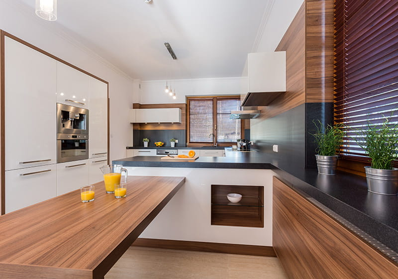

Trendy wnętrzarskie przychodzą i odchodzą. Kolor roku zmienia się co dwanaście miesięcy, a to co dziś jest na topie, za kilka lat może wyglądać anachronicznie. Jest jednak jedno połączenie, które od dekad pozostaje niezmienne — biała kuchnia z elementami drewna. Dlaczego ten duet jest ponadczasowy? I jak go dobrze zastosować, żeby nie wpaść w pułapkę sztampy?
Dlaczego biel + drewno nigdy nie wychodzi z mody?
To połączenie działa na kilku poziomach jednocześnie — psychologicznym, estetycznym i praktycznym. Biel daje poczucie przestrzeni i porządku, drewno wprowadza ciepło i naturalność. Razem tworzą równowagę, która sprawia, że kuchnia jest jednocześnie elegancka i przytulna — dwa cele, które rzadko udaje się osiągnąć naraz.
Co ważne, to zestawienie jest demokratyczne stylistycznie — pasuje zarówno do małego mieszkania w bloku, jak i do przestronnego domu z otwartym salonem. Dobrze wygląda ze stylem skandynawskim, japandi, nowoczesnym minimalizmem i klasyczną elegancją.
Gdzie wprowadzić drewno w białej kuchni?
Kluczem jest dozowanie — drewno jako akcent, nie dominanta. Kilka sprawdzonych miejsc, gdzie naturalne drewno robi największe wrażenie:
- Blat kuchenny — ciepły drewniany blat przy białych frontach to klasyk. Wymaga regularnej pielęgnacji olejem, ale efekt jest nie do podrobienia.
- Wyspa kuchenna — dolna część wyspy wykończona drewnem lub w kolorze drewna to elegancki sposób na wprowadzenie kontrastu bez przytłoczenia przestrzeni.
- Półki otwarte — drewniane półki nad blatem zamiast górnych szafek to hit ostatnich lat. Lekkie, dekoracyjne, wizualnie otwierają przestrzeń.
- Podłoga — jasna deska podłogowa lub płytka imitująca drewno spaja całość i nadaje kuchni przytulność.
- Stół i krzesła — drewniany stół jadalniany przy białej kuchni to naturalne przedłużenie strefy gotowania w otwartych przestrzeniach.

Jakie drewno wybrać do białej kuchni?
Gatunek drewna zmienia charakter całego wnętrza. Warto wybrać świadomie:
- Dąb naturalny — ciepły, złocisty odcień, wyrazista struktura słojów. Pasuje do stylu skandynawskiego i nowoczesnego. Najczęstszy wybór.
- Jesion — jaśniejszy, bardziej neutralny. Dobry dla tych, którzy chcą więcej światła, ale nie chcą rezygnować z naturalności.
- Orzech — ciemnobrązowy, ekskluzywny. Wprowadza luksusowy charakter — idealny do kuchni premium z białymi frontami lakierowanymi na wysoki połysk.
- Sosna lub bambus — tańsze alternatywy, dobrze sprawdzają się w stylistyce rustykalnej lub eco.
Drewno w kuchni to nie tylko estetyka — to materiał, który żyje razem z domem. Z wiekiem nabiera charakteru, ciemnieje, patynuje. To właśnie ta niepowtarzalność odróżnia naturalne drewno od laminatów i foli, które nigdy nie będą wyglądać tak samo. — Łukasz Kleszcz, stolarz z ponad 20-letnim doświadczeniem
Spójna przestrzeń — kuchnia a schody
Jeśli Twoja kuchnia jest częścią otwartego salonu z antresolą lub łączy się przestrzennie z klatką schodową, warto zadbać o spójność materiałową. Schody w tym samym gatunku drewna co blat kuchenny lub podłoga tworzą wizualną ciągłość, która sprawia, że cały parter wygląda jak zaprojektowany przez jedną rękę — nawet jeśli elementy powstawały niezależnie.
To jeden z powodów, dla których coraz więcej klientów pyta nas jednocześnie o schody i inne elementy stolarki — meble kuchenne, szafy, drzwi wewnętrzne. Spójność gatunku drewna i wykończenia to szczegół, który robi ogromną różnicę w końcowym efekcie.
Czego unikać przy białej kuchni z drewnem?
- Za dużo faktur naraz — biel, drewno, kamień, metal to maksimum czterech materiałów. Więcej tworzy chaos.
- Zbyt zimna biel — biel z niebieskim podtonem (RAL 9003 lub 9016) przy ciepłym drewnie może tworzyć nieprzyjemne napięcie. Sprawdź próbki razem przed zamówieniem.
- Drewniane fronty szafek na całej ścianie — to już nie jest akcent, to dominanta. Biała kuchnia z drewnem działa dlatego, że drewno jest mniejszością w tej parze.
- Zaniedbana pielęgnacja drewna — olejowany blat wymaga regularnego odnawiania co 6–12 miesięcy. Zanim zdecydujesz się na drewno na blacie, bądź świadomy tego zobowiązania.